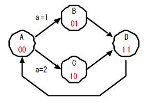
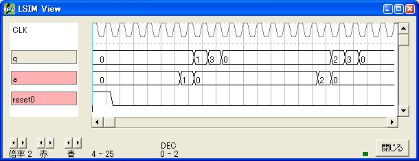
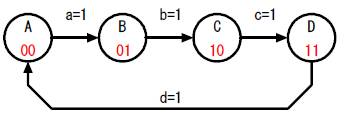
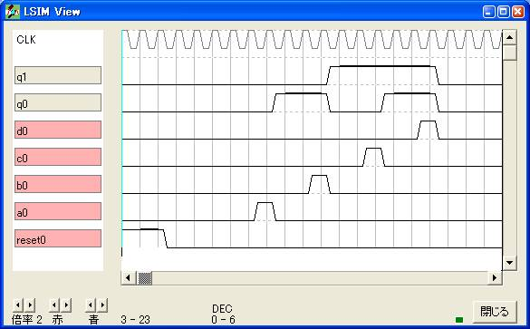
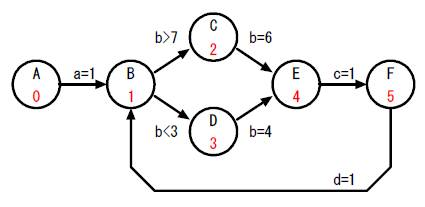
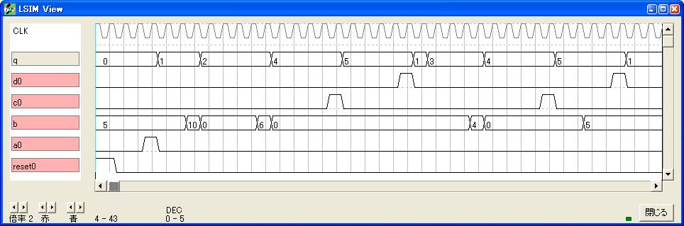
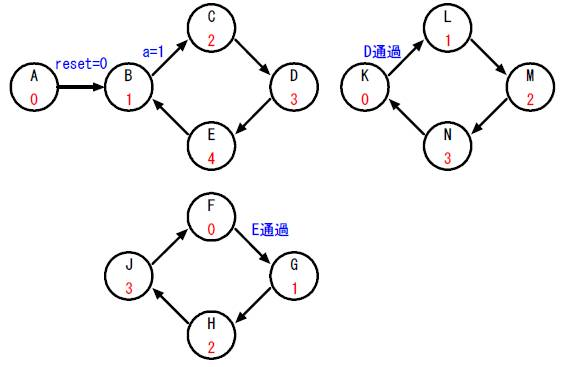
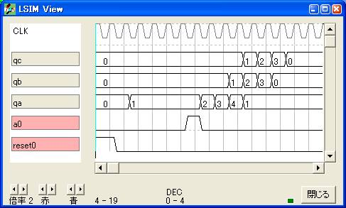

状態遷移
記憶型の信号を使ってその動きを図にしたものが状態
遷移図と言われるものです。
それを表にしたものが状態遷移表です。
記憶型の信号を用いた真理値表が状態遷移表になりま
す。これで時系列に関わる論理設計もブールの法則で
できます。
その1


論理譜
logicname yahoo48
entity main
input reset;
input a[2];
output q[3];
bitr rq[3];
q=rq;
if (reset)
rq=0;
else
switch(rq)
case 0:
switch(a)
case 0: rq=rq;
case 1: rq=1;
case 2: rq=2;
endswitch
case 1: rq=3;
case 2: rq=3;
case 3: rq=0;
endswitch
endif
ende
entity sim
output reset;
output a[2];
output q[3];
bitr tc[8];
part main(reset,a,q)
tc=tc+1;
if (tc<5) reset=1; endif
if (tc==10) a=1; endif
if (tc==20) a=2; endif
ende
endlogic
{ 状態遷移表 }
{ reset, sq.1, sq.0, a.1, a.0 -> sq.1, sq.0 }
{ 1, -, -, -, - -> 0, 0 }
{ 0, 0, 0, 0, 0 -> 0, 0 }
{ 0, 0, 0, 0, 1 -> 0, 1 }
{ 0, 0, 0, 1, 0 -> 1, 0 }
{ 0, 0, 1, -, - -> 1, 1 }
{ 0, 1, 0, -, - -> 1, 1 }
{ 0, 1, 1, -, - -> 0, 0 }
その2
ひとつの状態にひとつの信号を割り当てて遷移していきます。


論理譜
logicname yahoo50
entity main
input reset;
input a,b,c,d;
output q[2];
bitr rq[2];
q=rq;
if (reset)
rq=0;
else
switch(rq)
case 0b00: if (a) rq=0b01; else rq=rq; endif
case 0b01: if (b) rq=0b10; else rq=rq; endif
case 0b10: if (c) rq=0b11; else rq=rq; endif
case 0b11: if (d) rq=0b00; else rq=rq; endif
endswitch
endif
ende
entity sim
output reset;
output a,b,c,d;
output q[2];
bitr tc[8];
part main(reset,a,b,c,d,q)
tc=tc+1;
if (tc<5) reset=1; endif
if (tc==10) a=1; endif
if (tc==13) b=1; endif
if (tc==16) c=1; endif
if (tc==19) d=1; endif
ende
endlogic
その3
2値以外の数値で状態を遷移する例です。


論理譜
logicname yahoo51
entity main
input reset;
input a,b[4],c,d;
output q[3];
bitr rq[3];
q=rq;
if (reset)
rq=0;
else
switch(rq)
case 0: if (a) rq=1; endif
case 1:
if (b>7)
rq=2;
else
if (b<3)
rq=3;
else
rq=rq;
endif
endif
case 2:
if (b==6) rq=4; else rq=rq; endif
case 3:
if (b==4) rq=4; else rq=rq; endif
case 4:
if (c) rq=5; else rq=rq; endif
case 5:
if (d) rq=1; else rq=rq; endif
endswitch
endif
ende
entity sim
output reset;
output a,b[4],c,d;
output q[3];
bitr tc[8];
part main(reset,a,b,c,d,q)
tc=tc+1;
if (tc<5) reset=1; endif
if (tc==7) a=1; endif
if (tc<10) b=5; endif
if (tc==10) b=10; endif
if (tc==15) b=6; endif
if (tc==20) c=1; endif
if (tc==25) d=1; endif
if (tc==30) b=4; endif
if (tc==35) c=1; endif
if (tc==40) d=1; endif
if (tc>37) b=5; endif
ende
endlogic
その4
独立した状態を連携させた例です。


論理譜
logicname yahoo52
entity main
input reset;
input a;
output qa[3],qb[2],qc[2];
bitr rqa[3],rqb[2],rqc[2];
qa=rqa;
qb=rqb;
qc=rqc;
if (reset)
rqa=0;
else
switch(rqa)
case 0: rqa=1;
case 1: if (a) rqa=2; else rqa=rqa; endif
case 2: rqa=3;
case 3: rqa=4;
case 4: rqa=1;
endswitch
endif
if (reset)
rqb=0;
else
switch(rqb)
case 0: if (rqa==3) rqb=1; endif
default: rqb=rqb+1;
endswitch
endif
if (reset)
rqc=0;
else
switch(rqc)
case 0: if (rqa==4) rqc=1; endif
default: rqc=rqc+1;
endswitch
endif
ende
entity sim
output reset;
output a;
output qa[3],qb[2],qc[2];
bitr tc[8];
part main(reset,a,qa,qb,qc)
tc=tc+1;
if (tc<5) reset=1; endif
if (tc==10) a=1; endif
ende
endlogic
|